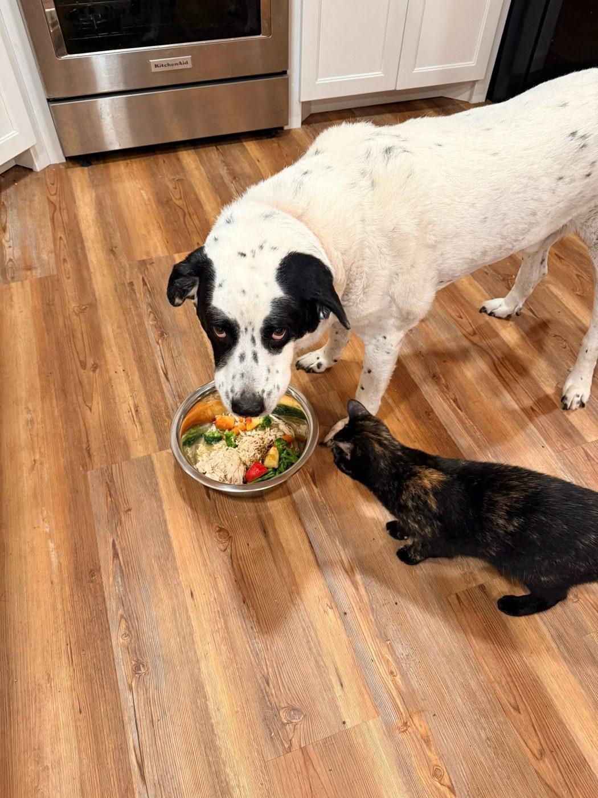

About the Ranch
Maximum security snuggles
Last Chance Ranch of South Carolina is a small, no-kill dog & cat sanctuary in Aiken, SC — run entirely by volunteers, funded entirely by people like you.
Who we are
The last stop before there isn't one
The name isn't a joke. The animals who come to us are the ones who've run out of other options — dumped, seized, surrendered, aged out, or simply too shy, too old, or too much for anyone else to take on. When they get here, the running out stops.
Our mission: to rescue and rehabilitate abused, neglected, and unwanted dogs and cats, providing adoption when possible and lifelong sanctuary care when needed, while promoting humane treatment and responsible pet ownership.
That last part matters. We're a sanctuary as well as a rescue. The dogs and cats who can be adopted, we work hard to place well. The ones who can't — because of age, health, or a past that left marks — live out their lives with us, safe, fed, and loved. Nobody here is on a clock.
And yes, about the whole "prison" thing: it started as a joke on Facebook and stuck. Our inmates are all innocent. They're doing time for circumstances beyond their control, the Warden loves every one of them, and parole is always on the table.

What we do
Rescue · Rehab · Rehome · Sanctuary
Intake
Dogs and cats from local shelters, owner surrenders, and strays in the CSRA and beyond — prioritizing the ones most at risk.
Vetting
Every animal is spayed/neutered, vaccinated, tested and treated for heartworm, microchipped, and given whatever care they need — however long it takes.
Rehab
Decompression, socialization, basic manners, and for the fearful ones, patience. Some of our best dogs came in unable to be touched.
Rehome or keep
Careful matches, honest write-ups, and a lifetime return policy. If a home isn't in the cards, this is the home.
Contact
Reach the Warden
- Phone / text
- FacebookLast Chance Ranch of SC — fastest way to reach us
- TikTok@last.chance.ranch03
- YouTubeLast Chance Ranch of SC
- PetfinderOur Petfinder page
- LocationAiken, South Carolina. Visits are by appointment only — please message ahead. We're a private property with a lot of dogs, not a walk-in shelter.
We're volunteers with day jobs, so give us a day or two to reply. If it's urgent — an animal in danger — please also contact Aiken County Animal Services.
Found or need to surrender an animal?
We're small and almost always full, but message us anyway — if we can't take an animal ourselves we'll do our best to point you to someone who can, or help you rehome responsibly.
Message usPress & partnerships
Want to feature a dog, host an event, or partner your business with the Ranch? We'd love that. Email us.